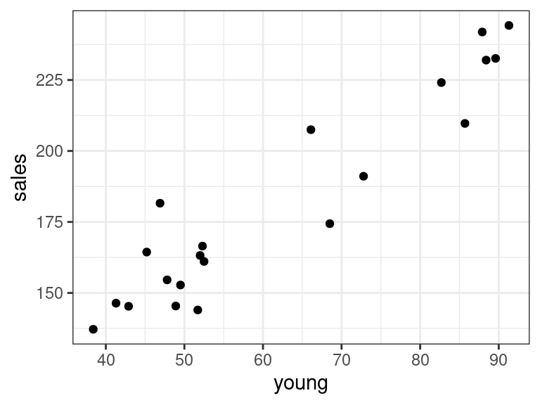
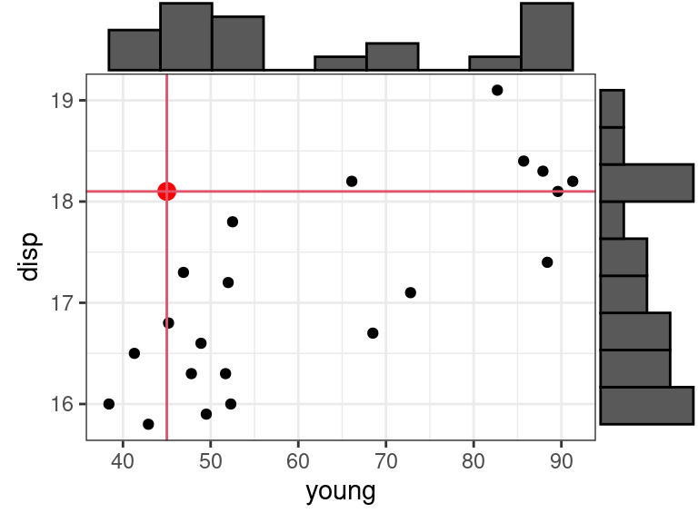
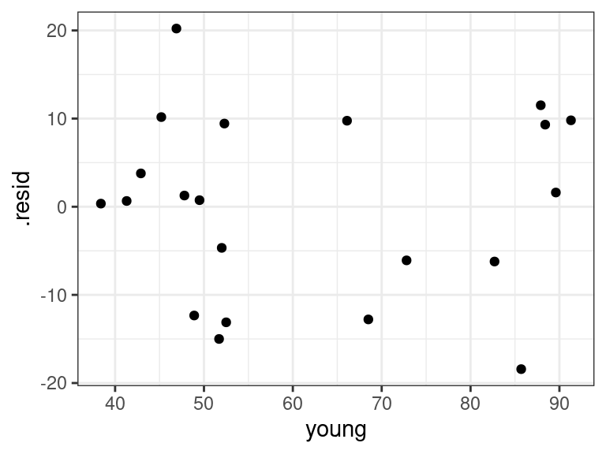
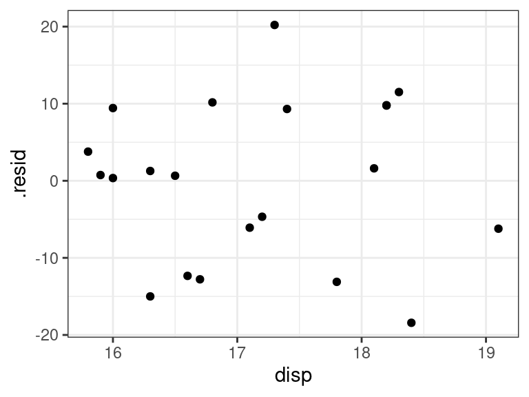

Multiple Linear Regression I
David Gerard
2021-10-26
Learning Objectives
- Multiple linear regression model definition and interpretation.
- Indicator variables, transformed variables, interaction effects,
- Inference
- Diagnostics and remedial measures.
- Chapter 6 of KNNL
Motivation
Most regression problems have more than one predictor.
Multiple linear regression explores the relationship between one response variable and multiple predictor variables.
- (if you have multiple response variables, this is called “multivariate” regression, and is a separate topic)
Examples:
- Predicting volume of tractor sales in a territory (\(Y\)) given number of farms (\(X_1\)) and crop production (\(X_2\)).
- Predicting a political party’s vote share in a congressional district (\(Y\)) given that party’s vote share in the previous election (\(X_1\)) and the incumbancy’s status of the political party (\(X_2\)).
Why include more predictors?
- You can often get a more accurate prediction of \(Y\) if you include more \(X\)’s.
- You can adjust for other variables when assessing the relationship between a response and a predictor of interest. (researchers often call this “controlling” for other variables)
Adjusting is necessary because the strength/sign of a relationship might change once you adjust for a variable.
Consider the earnings data described here and available for download here.
We might be interested in the association between height and earnings. Indeed, there seems to be a slight positive relationship.

But then we remember that men tend to be taller than women, and men tend to make more money than women, and so this might be the reason why marginally we are seeing this association between height and earnings.
The relationship appears to still be slightly positive within each sex, but nowhere near as strong as the marginal association.
Multiple linear regression model: 2 predictors
The multiple linear regression model for two predictors is \[\begin{align} Y_i &= \beta_0 + \beta_1X_{i1} + \beta_2X_{i2} + \epsilon_i\\ E[\epsilon_i] &= 0\\ var(\epsilon_i) &= \sigma^2\\ cov(\epsilon_i, \epsilon_j) &= 0 \text{ for all } i \neq j \end{align}\] where
- \(Y_i\) is the value of the response for individual \(i\).
- \(X_{i1}\) is the value of the first predictor for individual \(i\).
- \(X_{i2}\) is the value of the second predictor for individual \(i\).
- \(\epsilon_i\) is the error term for individual \(i\) (vertical distance from plane).
This necessarily means that \[ E[Y_i] = \beta_0 + \beta_1 X_{i1} + \beta_2X_{i2} \]
We can visualize this model using KNNL’s figure 6.1:

The regression function (the deterministic part) is often called the regression surface or the response surface.
Example: It’s been determined, from the
mtcarsdataset, that the relationship ofdrat(\(X_1\)) andwt(\(X_2\)) withmpg(\(Y\)) can be described by \[ E[Y] = 30.3 + 1.4 X_1 - 4.8 X_2 \]data("mtcars") coef(lm(mpg ~ drat + wt, data = mtcars))## (Intercept) drat wt ## 30.290 1.442 -4.783We interpret multiple linear models the same way we interpret simple linear models while considering that all predictors except one are fixed.
Suppose we are just interested in cars that are exactly 4000 pounds. Then, given a car is 4000 pounds, the regression relationship becomes \[\begin{align} E[Y] &= 30.3 + 1.4X_1 - 4.8 \times 4\\ &= 11.1 + 1.4 X_1. \end{align}\] So, given two cars that are the same weight, we expect the car with 1 more
dratto have 1.4 more miles per gallon, on average.This interpretation would have held if we considered any other car weight (besides 4000 pounds).
So \(\beta_1\) is interpreted as
The expected difference in \(Y\) between two individuals that differ by 1 \(X_1\) but have the same \(X_2\).
Similarly, \(\beta_2\) is interpreted as
The expected difference in \(Y\) between two individuals that differ by 1 \(X_2\) but have the same \(X_1\).
In the
mtcarsdataset example, a car that weighs 1000 pounds more but has the same drat will on average have 4.8 worse mpg.Visualization for interpretation:
The model
The multiple linear regression (MLR) model is of the form
\[\begin{align} Y_i &= \beta_0 + \beta_1X_{i1} + \beta_2X_{i2} + \cdots + \beta_{p-1}X_{i,p-1} + \epsilon_i\\ E[\epsilon_i] &= 0\\ var(\epsilon_i) &= \sigma^2\\ cov(\epsilon_i, \epsilon_j) &= 0 \text{ for all } i \neq j \end{align}\]
Using summation notation, we can write the top equation by \[ Y_i = \beta_0 + \sum_{j=1}^{p-1}\beta_j X_{ij} \]
Why use \(p-1\) in the indexing? The \(p\)th variable is \(X_{0i} = 1\) and the linear model can be equivalently written \[\begin{align} Y_i &= \beta_0X_{0i} + \beta_1X_{i1} + \beta_2X_{i2} + \cdots + \beta_pX_{i,p-1} + \epsilon_i\\ &= \sum_{j=0}^{p-1}\beta_j X_{ij} \end{align}\]
The response function \[ E[Y] = \beta_0 + \beta_1X_1 + \beta_2X_2 + \cdots + \beta_{p-1}X_{p-1} \] is a hyperplane. You cannot visualize this (since it involves more than three dimensions).
The interpretation of \(\beta_i\) is similar:
The expected difference in \(Y\) between two individuals that differ by 1 \(X_i\) but have the same values of every other predictor.
Notice that I am not using the words “change”, “increase”, or “decrease”. These are forbidden words in this class.
The flexibility of the linear model
- Fitting a hyperplane through a cloud of points seems restrictive, but it turns out that the multiple linear regression model is extremely flexible by including transformations of variables as covariates.
Polynomial regression
Suppose we want to fit a quadratic function to some data. Our model is
\[ Y_i = \beta_0 + \beta_1X_i + \beta_2 X_i^2 + \epsilon_i \]

We can redefine predictors: \[\begin{align} X_{i1} &= X_i\\ X_{i2} &= X_i^2 \end{align}\]
Then it is easy to see that this is the multiple linear model: \[ Y_i = \beta_0 + \beta_1X_{i1} + \beta_2 X_{i2} + \epsilon_i \]
This induces curvature in the response surface.
It is still called a linear model because it is linear in terms of the parameters (the \(\beta\)’s).
Transformed variables
It should be clear that you can include arbitrary transformations of the \(X_i\)’s (but this may or may not be a good idea).
Suppose
\[ \log(Y_i) = \beta_0 + \beta_1 X_{i1} + \beta_2 X_{i2} + \beta_3 X_{i3} + \epsilon_i \]
Then if we define \(Y_i' = \log(Y_i)\), we have the MLR
\[ Y_i' = \beta_0 + \beta_1 X_{i1} + \beta_2 X_{i2} + \beta_3 X_{i3} + \epsilon_i \]
Suppose \[ Y_i = \beta_0 + \beta_1 \log(X_{i1}) + \beta_2 X_{i2} + \beta_3 X_{i3} + \epsilon_i \]
Then if we define \(X_{i1}' = \log(X_{i1})\), we have the MLR
\[ Y_i = \beta_0 + \beta_1 X_{i1}' + \beta_2 X_{i2} + \beta_3 X_{i3} + \epsilon_i \]
These are result in complicated curved response surfaces.
It is still called a linear model because it is linear in terms of the parameters (the \(\beta\)’s).
Categorical (qualitative) variables
Categorical variables (such as alive/dead, race, marital status, etc) can be used as predictors in the linear model by using indicator variables.
An indicator variable takes on the value of 1 if a unit belongs to a category and 0 if it does not.
E.g., from the
mtcarsdataset,amis an indicator variable where \[ X_{i} = \begin{cases} 1 & \text{ if manual}\\ 0 & \text{ if automatic} \end{cases} \]You could then include this indicator variable into the multiple linear regression model as a predictor. \[ Y_i = \beta_0 + \beta_1 X_i + \epsilon_i \]
The model for automatic cars is \[ Y_i = \beta_0 + \epsilon_i \]
The model for manual cars is \[ Y_i = \beta_0 + \beta_1 + \epsilon_i \]
So \(\beta_1\) is interpreted as the mean difference between automatic and manual cars.
If other covariates are included in the model, this interpretation changes to the “mean difference between automatic and manual cars while adjusting for other variables”.
If there are \(c\) classes (instead of 2), we use \(c-1\) indicator variables to represent this categorical variable.
For example, in the
mpgdataset from the{ggplot2}package, thedrvvariable has values"f","4"and"r". We could create two variables \[\begin{align} X_{i1} &= \begin{cases} 1 & \text{ if forward-wheel drive}\\ 0 & \text{ otherwise} \end{cases}\\ X_{i2} &= \begin{cases} 1 & \text{ if 4-wheel drive}\\ 0 & \text{ otherwise} \end{cases} \end{align}\]The multiple linear regression model (using, say,
ctyas the response) becomes\[ Y_i = \beta_0 + \beta_1 X_{i1} + \beta_2 X_{i2} + \epsilon_i \]
The model for rear-wheel drive cars is \[ Y_i = \beta_0 + \epsilon_i \]
The model for forward-wheel drive cars is \[ Y_i = \beta_0 + \beta_1 + \epsilon_i \]
The model for 4-wheel drive cars is \[ Y_i = \beta_0 + \beta_2 + \epsilon_i \]
\(\beta_0\) is interpreted as the mean city mpg for rear-wheel drive cars.
\(\beta_1\) is interpreted as the mean difference in city mpg between rear-wheel drive and forward-wheel drive cars.
\(\beta_2\) is interpreted as the mean difference in city mpg between rear-wheel drive and 4-wheel drive cars.
Exercise: What is the mean difference in city mpg between 4-wheel drive and forward-wheel drive cars?
This parameterization allows for a different mean for each class. This is the exact same as ANOVA.
We’ll talk more about indicator variables in Chapter 8.
Interaction effects
The effect of one predictor may depend on the values of other predictors.
E.g., in the height/earnings example, we saw that height might have a stronger earnings effect in men than in women (the slope was steeper for men than for women).
Interaction terms are represented by multiplying predictors with each other: \[ Y_i = \beta_0 + \beta_1X_{1i} + \beta_2X_{2i} +\beta_3X_{1i}X_{2i} + \epsilon_i \]
We can get back the linear model by setting \(X_3 = X_{1i}X_{2i}\).
This creates a very complicated and flexible model. We will talk about these interaction terms in chapter 8.
Matrix Representation
The matrix representation of the multiple linear regression model is the exact same as the matrix representation of the simple linear regression model, once we define the appropriate matrices.
Let \[\begin{align} \mathbf{y} &= \left( \begin{array}{c} Y_1\\ Y_2\\ \vdots\\ Y_n \end{array} \right),\\ \mathbf{X} &= \left( \begin{array}{cc} 1 & X_{11} & X_{12} & \cdots & X_{1,p-1}\\ 1 & X_{21} & X_{22} & \cdots & X_{2,p-1}\\ \vdots & \vdots & \vdots & & \vdots \\ 1 & X_{n1} & X_{n2} & \cdots & X_{n,p-1} \end{array} \right),\\ \mathbf{\beta} &= \left( \begin{array}{c} \beta_0\\ \beta_1\\ \vdots\\ \beta_{p-1} \end{array} \right),\\ \mathbf{\epsilon} &= \left( \begin{array}{c} \epsilon_1\\ \epsilon_2\\ \vdots\\ \epsilon_n \end{array} \right) \end{align}\]
The multiple linear model can be fully expressed with assumptions via \[\begin{align} \mathbf{y} &= \mathbf{X}\mathbf{\beta} + \mathbf{\epsilon}\\ E[\mathbf{\epsilon}] &= \mathbf{0}_n\\ cov(\mathbf{\epsilon}) &= \sigma^2\mathbf{I}_n \end{align}\]
For the normal linear model (important only for prediction intervals or small sample sizes), you further assume that each \(\epsilon_i\) is normally distributed.
Exercise: In the \(\mathbf{X}\) matrix. What does the \(i\) represent in \(X_{ij}\)? What does the \(j\) represent?
Estimates and fitted values
\[ Y_i = \beta_0 + \beta_1X_{i1} + \beta_2X_{i2} + \cdots + \beta_{p-1}X_{i,p-1} + \epsilon_i \]
The \(\beta\)’s are unknown. So, as in SLR, we estimate them by OLS: \[ \min_{\beta_0,\beta_1,\ldots,\beta_{p-1}}\sum_{i=1}^n[Y_i - (\beta_0 + \beta_1X_{i1} + \beta_2X_{i2} + \cdots \beta_{p-1}X_{i,p-1})]^2 \]
The OLS estimates can be expressed using matrix notation the exact same way as in SLR: \[ \hat{\mathbf{\beta}} = (\mathbf{X}^T\mathbf{X})^{-1}\mathbf{X}^T\mathbf{y} \]
The fitted values and the residuals can be expressed using matrix notation the exact same way as in SLR: \[ \hat{\mathbf{Y}} = \mathbf{X}(\mathbf{X}^T\mathbf{X})^{-1}\mathbf{X}^T\mathbf{Y} \] \[ \mathbf{e} = (\mathbf{I}_n - \mathbf{H})\mathbf{Y}. \]
Inference
One can show that the OLS estimates are unbiased: \[ E[\hat{\mathbf{\beta}}] = \mathbf{\beta}, \] where this expectation is taken over the sampling distribution of \(\hat{\mathbf{\beta}}\).
The estimated covariance matrix of \(\mathbf{\beta}\) can be expressed the using matrix notation the exact same way as in SLR: \[ s^2(\hat{\mathbf{\beta}}) = MSE(\mathbf{X}^T\mathbf{X})^{-1} \]
Exercise: What is the dimension of \(s^2(\hat{\mathbf{\beta}})\)
Exercise: How would you get the standard error of \(\hat{\beta}_i\) from this covariance matrix? We denote this standard error \(s\{\hat{\beta}_i\}\).
It can be shown that the sampling distribution of \(\hat{\beta}_i\) is given by \[ t_i = \frac{\hat{\beta}_i - \beta_i}{s\{\hat{\beta}_i\}} \sim t(n-p) \]
Confidence intervals: Because of this sampling distribution, we have \[ \text{Pr}(\text{qt}(\alpha / 2, n-p) \leq t \leq \text{qt}(1 - \alpha/2, n-p)) = 1 - \alpha, \] where this probability is taken over the sampling distribution of \(t\).
 So a 95% confidence interval can be found by solving for \(\beta_i\) in \[\begin{align}
&\text{qt}(\alpha / 2, n-p) \leq \frac{\hat{\beta}_i - \beta_i}{s\{\hat{\beta}_i\}} \leq \text{qt}(1 - \alpha/2, n-p)\\
&\Leftrightarrow \text{qt}(\alpha / 2, n-p)s\{\hat{\beta}_i\} \leq \hat{\beta}_i - \beta_i \leq \text{qt}(1 - \alpha/2, n-p)s\{\hat{\beta}_i\}\\
&\Leftrightarrow \hat{\beta}_i - \text{qt}(\alpha / 2, n-p)s\{\hat{\beta}_i\} \geq \beta_i \geq \hat{\beta}_i - \text{qt}(1 - \alpha/2, n-p)s\{\hat{\beta}_i\}.
\end{align}\] Noting that \(\text{qt}(\alpha / 2, n-p) = -\text{qt}(1 - \alpha/2, n-p)\), we can write this interval as \[
\hat{\beta}_i \pm \text{qt}(1 - \alpha/2, n-p)s\{\hat{\beta}_i\}
\]
So a 95% confidence interval can be found by solving for \(\beta_i\) in \[\begin{align}
&\text{qt}(\alpha / 2, n-p) \leq \frac{\hat{\beta}_i - \beta_i}{s\{\hat{\beta}_i\}} \leq \text{qt}(1 - \alpha/2, n-p)\\
&\Leftrightarrow \text{qt}(\alpha / 2, n-p)s\{\hat{\beta}_i\} \leq \hat{\beta}_i - \beta_i \leq \text{qt}(1 - \alpha/2, n-p)s\{\hat{\beta}_i\}\\
&\Leftrightarrow \hat{\beta}_i - \text{qt}(\alpha / 2, n-p)s\{\hat{\beta}_i\} \geq \beta_i \geq \hat{\beta}_i - \text{qt}(1 - \alpha/2, n-p)s\{\hat{\beta}_i\}.
\end{align}\] Noting that \(\text{qt}(\alpha / 2, n-p) = -\text{qt}(1 - \alpha/2, n-p)\), we can write this interval as \[
\hat{\beta}_i \pm \text{qt}(1 - \alpha/2, n-p)s\{\hat{\beta}_i\}
\]This sampling distribution can also be used to test
- \(H_0: \beta_i = 0\) versus
- \(H_A: \beta_i \neq 0\).
Under the null, we have \[ t^* = \frac{\hat{\beta}_i}{s\{\hat{\beta}_i\}} \sim t(n-p). \] So to test against \(H_0\), we can compare \(t^* = \frac{\hat{\beta}_i}{s\{\hat{\beta}_i\}}\) to a \(t(n-p)\) distribution and see how extreme it is. \[ \text{$p$-value} = 2*\text{pt}(-|t^*|, n-p). \]

When we test for \(H_0: \beta_1 = 0\) versus \(H_A:\beta_1 \neq 0\), we are still allowing all other \(\beta_k\)’s to be non-zero. That is, we are comparing the two models: \[\begin{align} H_0&: Y_i = \beta_0 \phantom{+ \beta_1X_{i1}}\hspace{2.3mm} + \beta_2X_{i2} + \beta_3 X_{i3} + \cdots + \beta_{p-1}X_{i,p-1} + \epsilon_i\\ H_A&: Y_i = \beta_0 + \beta_1X_{i1} + \beta_2X_{i2} + \beta_3 X_{i3} + \cdots + \beta_{p-1}X_{i,p-1} + \epsilon_i \end{align}\]
The results of this hypothesis would be different if we had other covariates in the model because then we are comparing different models.
Estimation and Inference in R
A portrait studio chain contains data on 21 cities (from Section 6.9 of KNNL). Variables include
young: The number of persons aged 16 or younger in the community (thousands of persons).disp: The per capita disposable personal income in the community (thousands of dollars).sales: Portrait studio sales in the community (thousands of dollars).
You can load these data into R with:
portrait <- tribble(~young, ~disp, ~sales, 68.5, 16.7, 174.4, 45.2, 16.8, 164.4, 91.3, 18.2, 244.2, 47.8, 16.3, 154.6, 46.9, 17.3, 181.6, 66.1, 18.2, 207.5, 49.5, 15.9, 152.8, 52.0, 17.2, 163.2, 48.9, 16.6, 145.4, 38.4, 16.0, 137.2, 87.9, 18.3, 241.9, 72.8, 17.1, 191.1, 88.4, 17.4, 232.0, 42.9, 15.8, 145.3, 52.5, 17.8, 161.1, 85.7, 18.4, 209.7, 41.3, 16.5, 146.4, 51.7, 16.3, 144.0, 89.6, 18.1, 232.6, 82.7, 19.1, 224.1, 52.3, 16.0, 166.5)The goal is to predict sales from these other two variables.
Let’s begin with an EDA
qplot(x = disp, y = sales, data = portrait)qplot(x = young, y = sales, data = portrait)
There seems to be a strong linear relationship between portrait and disp and portrait and young.
A shortcut to making these plots is the
ggpairs()function from the{GGally}package. It creates what’s called a scatterplot matrix.library(GGally) ggpairs(data = portrait)We will fit the model \[ Y_i = \beta_0 + \beta_1X_{1i} + \beta_2X_{2i} + \epsilon_i \] We use the same syntax as in SLR, but add multiple predictors on the right hand side of the formula.
lmout <- lm(sales ~ young + disp, data = portrait) lmout## ## Call: ## lm(formula = sales ~ young + disp, data = portrait) ## ## Coefficients: ## (Intercept) young disp ## -68.86 1.45 9.37You obtain coefficient estimates, standard errors, and \(p\)-values against the null of \(\beta_k = 0\) using
tidy()from the{broom}package.library(broom) tidy(lmout)## # A tibble: 3 × 5 ## term estimate std.error statistic p.value ## <chr> <dbl> <dbl> <dbl> <dbl> ## 1 (Intercept) -68.9 60.0 -1.15 0.266 ## 2 young 1.45 0.212 6.87 0.00000200 ## 3 disp 9.37 4.06 2.30 0.0333Confidence intervals can be obtained using the
conf.int = TRUEargument.tidy(lmout, conf.int = TRUE)## # A tibble: 3 × 7 ## term estimate std.error statistic p.value conf.low conf.high ## <chr> <dbl> <dbl> <dbl> <dbl> <dbl> <dbl> ## 1 (Intercept) -68.9 60.0 -1.15 0.266 -195. 57.2 ## 2 young 1.45 0.212 6.87 0.00000200 1.01 1.90 ## 3 disp 9.37 4.06 2.30 0.0333 0.827 17.9We will talk about assessing the fit of this model later.
Exercise: Let \(Y_i\) be the sales for community \(i\), \(X_{i1}\) be the number of young individuals in community \(i\), and \(X_{i2}\) be the amount of disposable income for individual \(i\). Write out the two models that the \(p\)-value
0.002e-06is testing. Write out the two models that the \(p\)-value3.332e-02is testing.Let’s compare these coefficients to those under simple linear regression.
lm_simp_young <- lm(sales ~ young, data = portrait) tidy(lm_simp_young)## # A tibble: 2 × 5 ## term estimate std.error statistic p.value ## <chr> <dbl> <dbl> <dbl> <dbl> ## 1 (Intercept) 68.0 9.46 7.19 7.86e- 7 ## 2 young 1.84 0.146 12.5 1.23e-10lm_simp_disp <- lm(sales ~ disp, data = portrait) tidy(lm_simp_disp)## # A tibble: 2 × 5 ## term estimate std.error statistic p.value ## <chr> <dbl> <dbl> <dbl> <dbl> ## 1 (Intercept) -352. 80.7 -4.37 0.000329 ## 2 disp 31.2 4.70 6.64 0.00000239Look how different the coefficient for
dispis when we includeyoungversus when we do not includeyoung.You should generally expect the coefficient estimates of the same variable to differ as you include more covariates in your model.
Whenever you include more covariates in a model, the interpretation of the coefficient on the same variable changes.
What is the interpretation of the 31.17 coefficient?
Communities that have a per-capita disposable income that is $1000 more tend to have about $31,000 more sales.
What is the interpretation of the 9.366 coefficient?
Communities that have a per-capita disposable income that is $1000 more, but the same number of young people, tend to have about $9400 more sales.
Or, adjusting for the number of young people in a community, communities that have $1000 more in per capita income tend to have $9400 more sales.
- These are equivalent interpretations. I like the first description better, but when you are publishing a paper you should use the second description.
Exercise: Consider the university admissions data, described here and available for download here: https://dcgerard.github.io/stat_415_615/data/university.csv
Write out, using mathematical notation, the model for a multiple linear regression model for gpa on rank, act, and year. You should define variables.
Fit this model in R, estimate the coefficients, and run hypothesis tests against the null that the coefficients of each term are zero.
What is the estimated regression surface?
Provide an interpretation for the coefficient on
rank.Write out the two models that the \(p\)-value for
yearis testing.What is the residual standard deviation?
Estimating mean responses and making predictions.
Let \(\mathbf{X}_h\) denote the \(m\times p\) matrix of the predictor values at \(m\) new observations.
The mean value of the response at these new observations is \[ E[\mathbf{y}_h] = \mathbf{X}_h\mathbf{\beta} \]
We can estimate this with \[ \hat{\mathbf{y}}_h = \mathbf{X}_h\hat{\mathbf{\beta}} = \mathbf{X}_h(\mathbf{X}^T\mathbf{X})^{-1}\mathbf{X}^T\mathbf{Y} \]
If \(\mathbf{X}_h = \mathbf{X}\), then we can use
augment()from{broom}to obtain the fitted valueaugment(lmout)## # A tibble: 21 × 9 ## sales young disp .fitted .resid .hat .sigma .cooksd .std.resid ## <dbl> <dbl> <dbl> <dbl> <dbl> <dbl> <dbl> <dbl> <dbl> ## 1 174. 68.5 16.7 187. -12.8 0.122 10.8 0.0710 -1.24 ## 2 164. 45.2 16.8 154. 10.2 0.104 11.0 0.0370 0.976 ## 3 244. 91.3 18.2 234. 9.80 0.174 11.0 0.0673 0.980 ## 4 155. 47.8 16.3 153. 1.27 0.0863 11.3 0.000460 0.121 ## 5 182. 46.9 17.3 161. 20.2 0.162 9.98 0.259 2.01 ## 6 208. 66.1 18.2 198. 9.76 0.158 11.0 0.0585 0.966 ## 7 153. 49.5 15.9 152. 0.745 0.143 11.3 0.000299 0.0731 ## 8 163. 52 17.2 168. -4.67 0.0916 11.3 0.00665 -0.445 ## 9 145. 48.9 16.6 158. -12.3 0.0724 10.9 0.0353 -1.16 ## 10 137. 38.4 16 137. 0.354 0.133 11.3 0.0000607 0.0345 ## # … with 11 more rowsIf we have a new set of predictors, then we need to first create the data frame representing \(\mathbf{X}_h\) before using
predict()to obtain estimated mean values.newdf <- data.frame(young = c(60, 55), disp = c(15, 15.5)) predict(object = lmout, newdata = newdf)## 1 2 ## 158.9 156.3Standard errors for the fitted values can be obtained using matrix notation in the same way as in SLR \[\begin{align} var(\hat{\mathbf{y}}_h) &= var(\mathbf{X}_h(\mathbf{X}^T\mathbf{X})^{-1}\mathbf{X}^T\mathbf{Y})\\ &= \mathbf{X}_h(\mathbf{X}^T\mathbf{X})^{-1}\mathbf{X}^Tvar(\mathbf{Y})\mathbf{X}(\mathbf{X}^T\mathbf{X})^{-1}\mathbf{X}_h^T\\ &= \sigma^2\mathbf{X}_h(\mathbf{X}^T\mathbf{X})^{-1}\mathbf{X}^T\mathbf{X}(\mathbf{X}^T\mathbf{X})^{-1}\mathbf{X}_h^T\\ &= \sigma^2\mathbf{X}_h(\mathbf{X}^T\mathbf{X})^{-1}\mathbf{X}_h^T. \end{align}\] The standard errors are the square roots of the diagonal of the above matrix.
If \(\hat{Y}_h\) is a single value, then the formula for the confidence interval for the mean is \[ \hat{Y}_h \pm qt(1 - \alpha / 2, n-p)s\{\hat{Y}_h\} \]
A Working-Hotelling procedure is also possible for the entire response surface.
In R, you just tell
predict()that you want confidence intervals.predict(object = lmout, newdata = newdf, interval = "confidence")## fit lwr upr ## 1 158.9 140.6 177.2 ## 2 156.3 143.5 169.1Exercise: In the above portrait studio example that we implemented in R, write out \(\mathbf{X}_h\) and \(\mathbf{y}_h\).
Predicted values \(\hat{\mathbf{y}}_h\) at a new set of predictor values \(\mathbf{X}_h\) have the same form as the estimated mean response.
You add the MSE to the estimated standard error to account for the added variability of individual observations.
\[ s^2\{pred\} = MSE + s^2\{\hat{\mathbf{y}}_h\} \]
Prediction intervals can then be found by using this standard error \[ \hat{Y}_h \pm qt(1 - \alpha / 2, n-p)s\{pred\} \]
In R, you just use the
interval = "prediction"argument.predict(object = lmout, newdata = newdf, interval = "prediction")## fit lwr upr ## 1 158.9 129.4 188.4 ## 2 156.3 129.9 182.7Recall, prediction intervals depend strongly on the normality assumption.
Be careful about hidden extrapolations in multiple linear regression. Looking at marginal ranges is not enough.
In the below plot, the red dot is in the range of \(x_1\) =
youngand in the range of \(x_2\) =disp, but is not in the range of the joint distribution ofyounganddisp.
Diagnostics
Recall, the assumptions of the linear model in decreasing order of importance are:
Linearity - Does the relationship look like a straight line?
Independence - knowledge of the value of one observation does not give you any information on the value of another.
Equal Variance - The spread is the same for every value of \(x\)
Normality - The distribution isn’t too skewed and there aren’t any too extreme points. (only an issue if you have outliers and a small number of observations, or if you are doing prediction intervals).
Residual plots are used the same way as before.
Plot residuals versus fitted values
- See curvature? Try logging variables if appropriate, or other transformation. If it doesn’t work, try including quadratic terms.
- See non-constant variance? If the goal is estimation, then use sandwich standard errors.
- See outlying observations? Try to first explain why that observation is outlying. If that doesn’t work, try a robust approach (like quantile regression).
Plotting predictors versus residuals can tell you if you need to log certain predictors.
Plot residuals versus omitted predictor variables to explore if including these variables is necessary.
- If you see an association between the residuals and the omitted predictor, then you might want to include that predictor.
Obtain residuals in MLR using the same code as in SLR:
aout <- augment(x = lmout) qplot(x = .fitted, y = .resid, data = aout)
qplot(x = young, y = .resid, data = aout)
qplot(x = disp, y = .resid, data = aout)
Everything looks good for our portrait example. Even the QQ-plot looks good.
qplot(sample = .resid, data = aout, geom = "qq") + geom_qq_line()Exercise: Recall the real estate data that you can read about here and download here: https://dcgerard.github.io/stat_415_615/data/estate.csv
Fit a linear model of price on area and lot size.
Make residual plots and from these alone, try to deduce any possible issues.
Try to fix the issues from part 2. Iterate making residual plots and fixing issues until you have a final model.
Write down your final model
Obtain coefficient estimates and interpret them on the original scale of all variables.
A new house is on sale. It has an area of 1000 square feet and a lot-size of 10,000. The realter wants you to give them a range of possible selling prices.